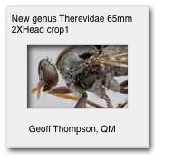

Hints and tips
Hints and tips
- Learn about:
Download:
- Basic Phocus Processing Workflow [.pdf 2.8MB] for guidance on using Hasselblad Phocus software to convert the Hasselblad RAW files (courtesy of Les Walkling)
- Notes on Reprographic Photography [.pdf 3MB] (courtesy of Les Walkling) for information on:
- Camera alignment
- Lighting setups
- An adaptable single camera lighting setup
- Depth of field
- Diffraction limiting in optical systems
- Calculating copy stand layouts
- Scene calibration
- Quality control and assurance
- Guidance on Photographing specimens in natural history collections documenting the experiences of the South Australia Museum and Australian Museum in their rapid digitisation projects.
File naming
How to name a digital file is contentious, especially when the file is a digitised version of a specimen. You may want to indicate in the name such metadata as:
- species name
- magnification
- specimen location
- photographer
- copyright holder
- lighting conditions
- lens used
- sequence number, if more than one image was created.
All these metadata may be appropriate to include in a file name. Ideally, your institution will develop a file naming convention to be used across the institution. However, it is unlikely that a single, simple convention will satisfy everyone, so an institutional convention should allow flexibility to meet the needs of those creating the files.
The only strict rules for naming files are:
- The format of file names needs to make sense and be useful.
- Use lower case letters except for the first letter and names.
- Do not use non-alphanumeric characters apart from dashes and underscores; some other characters are used by the computer operating system and could cause problems.
- Try to limit the length of the file name, but make it as long as necessary to be informative.
In addition, the digital asset management system used to manage your files may have its own requirements for file names. (It will apply its own system of identifier to files anyway).
Ultimately, file names must be meaningful and useful.
However you decide to name a file remember that you can also embed metadata within a digital image file. Virtually all digital images created today have embedded EXIF data covering things like, camera make and model, exposure used, date and time of exposure, focal length used. You can view/edit/add to this metadata using a number of different software programs. Some of the metadata you might like to include in the file name can be easily embedded in an image, eg copyright, photographer, species name, where it is less likely to be accidentally removed, as will happen if the file name is changed.
So file naming conventions should provide for embedded metadata.
(Includes suggestions from Alexis Tindall, South Australian Museum)
Embedding metadata
In addition to institution/photographer required embedded metadata, the Atlas recommends embedding the following metadata in images of a specimen in a collection:
- a unique identifier for the specimen represented in the image. In terms of Darwin Core, this should be the field ‘catalogNumber’ and for HISPID 5 the ‘Accession Identifier’ (UnitID) field. This allows the image user to discover more information on the specimen by looking up the unique identifier on the Atlas or institution’s database (provided the specimen has been databased and shared with the Atlas)
- the determination of the species at the date of imaging. This provides a baseline against which the current name can be determined, assuming the determination is correct.
Digitising photographic slides
Photographic slides often have useful metadata written on their mount, as in this example (though the metadata may be not as neat as in the example).
When digitising such photographic slides remember to digitise the:
- image area at a high resolution
- mounted slide at a lower resolution but one that can be easily read online
- sheet of slides (if one is used; this provides context for each slide.)
You can establish a project in the Atlas’s volunteer portal to transcribe the metadata on the mount and associate it with the digitised image.
Photographing through clear plastic envelopes
Some specimens are stored in clear plastic envelopes and cannot be removed for digitisation. But the plastic reflects light and makes it hard to get a clear, sharp image. How can you digitise such specimens?
This situation presents at least two problems, clarity/resolution and reflection/diffraction. There is not a lot we can do about degraded optical resolution apart from making sure the plastic is as clean and unwrinkled as it can be. Surface reflections can be controlled by cross polarised lighting. A high quality circular polarising filter like a B+W Polarising Filter will help. Adding polarised filters to your light source will help even more. This will also increase tonal and colour contrasts. Given that resolution is in part about (edge) contrast, then polarising would also help reinforce the ‘apparent’ resolution. You might also need to look at post-processing techniques that further enhance edge contrast. For example a Photoshop Unsharp Mask filter with the settings of Amount = 25%, Radius = 25px, Threshold = 2 Levels might just do wonders for the image. Of course, it depends on what qualities and values you need to capture and preserve. But initially do some experiments with cross polarisation.
(Courtesy of Les Walkling)
Focus stacking
One of the key challenges in photographing insects or other small specimens is the very shallow depth of field when photographing at high magnification or with macro equipment. Digital imaging makes it possible to create images that are completely focussed by using a technique called ‘focus stacking’. Focus stacking makes it possible to create a digital image of a specimen that has all detail in focus, including taxonomic characteristics in many instances.
Do you need to focus stack?
The depth of field in an image can add to the three dimensionality of that image. Many dramatic photographs of live insects or other small subjects use the shallow depth of field to highlight a certain area of the image. For illustration purposes, an anterior photo of a fly, with its abdomen disappearing out of focus, can be very striking.
A simple way to increase the depth of field is to increase the f-stop in your image. At a greater f-stop (which shrinks the aperture on the camera) the depth of field is greater due to the steeper angle of light passing through the aperture. But as the aperture gets smaller, diffraction effects also begin to appear and lead to a loss of definition. Focus stacking is an excellent way of getting crisper edges than the camera would be capable of with a smaller aperture.
Basic method
Focus stacking is simply capturing a series of photographs at slightly different distances, which are then stitched together using a computer program to create a perfectly in-focus image. Equipment and software are available to make focus stacking straightforward for large scale digitisation projects or studios.
Equipment
Visionary Digital’s BK System offers a motorised lift for the camera and specialised lighting, integrated with software to capture and manipulate specimen images.
The Stackshot automated focussing rail moves the camera evenly spaced increments, and fires the shutter to capture the images to be stacked.
Many microscopy suppliers can supply motorised z-axis drives or columns and montaging software.
Example focus stacking software includes:
For a more detailed explanation of focus stacking see An Introduction to Focus Stacking — Extended Depth of Field Digital Photography
(Courtesy of Alexis Tindall, South Australian Museum)
Copyright, museums and volunteers
Copyright refers to the exclusive legal right of a creator to publish literary, artistic or other material that they have created. Its intention is to protect the right of a person to be the first to be attributed as the creator of their work, and to commercially exploit it if that is their wish. Copyright exists automatically upon creation of a work, there is no need to document or record it. It only exists for a limited period of time, which varies depending on the nature of the work and the circumstances of its creation and publication.
In Australia the creator of a work usually owns the copyright in that work. If someone has created the work as part of their employment, the copyright is owned by their employer. This does not apply to volunteers. Volunteers retain ownership of the copyright in material that they have created, unless it is assigned to another party in writing.
Challenges for museum digitisation projects
- The nature of the work that scientists conduct in museums means that some scientists manage collections of images that pre-date their work at that museum, mingled with those captured as part of their current employment.
- Museums may house collections of analogue and digital images that are poorly documented, perhaps taken by volunteers, taken by non-employees with some relationship to the museum, or bequeathed to the museum but poorly documented.
- The museum cares for many works for which the copyright period has expired (between 50 and 70 years after the death of the creator, depending on the material). These works are considered to be in the public domain, and legally, the museum cannot restrict the use of such works. This should encourage museums to make those images publicly accessible, but the museum should consider and be prepared for unanticipated uses of that material.
Tips for museum digitisation projects
- Most volunteers will happily sign a simple letter assigning copyright of their images to a museum.
- Organisations can only publish material with a Creative Commons licence if they are the copyright owner. This means that CC licences must not be applied to works that are in the public domain (these can be published with the comment ‘no known copyright restrictions’).
- Museums are the custodians of some material that should not be distributed. This includes culturally and environmentally sensitive material.
- Copyright information must be documented in an asset management system. This includes any restrictions imposed on donated or bequeathed private collections. Embarking on a digitisation project quickly exposes gaps in an organisation’s information management practices!
- The release of works that are in the public domain should be seen as an opportunity for public collections, rather than a threat! There are many online initiatives that celebrate the freedom of unrestricted digitised works and encourage their re-use in exciting, previously impossible ways.
For more information see, eg:
- Australian Copyright Council
- Arts Law Centre, Copyright info sheet
- Creative Commons Australia
- The Flickr Commons
(Courtesy of Alexis Tindall, South Australian Museum)